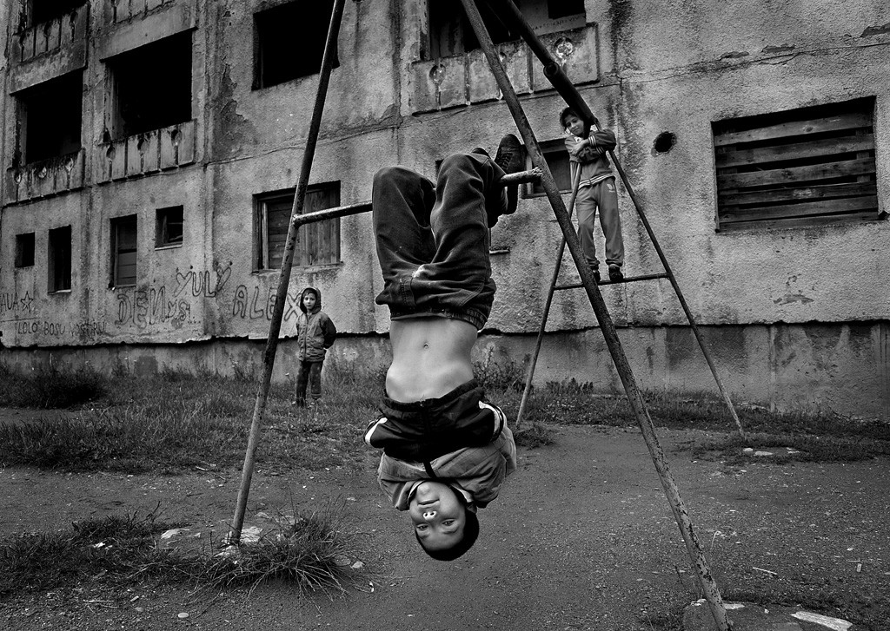
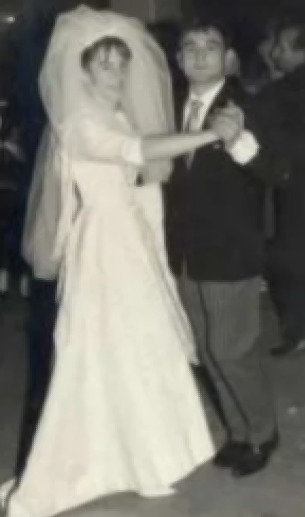

Niñez
Nació el 18 de abril de 1937, en plena guerra civil española. Su madre se llamaba Patrocinio y su padre Isidoro. Nació en una casa del pueblo y su padre no pudo estar presente porque estaba en la Guerra Civil. Fernando era el mayor de 3 hermanos: Alfonso y Eduardo. Fernando tuvo que dejar el colegio a los 7 años, y además no pudo hacer la comunión. Tuvo que pasar algún tiempo viviendo con su abuela materna Eugenia, porque a sus padres les metieron en la cárcel después de la guerra.
Juventud
Fernando hizo la milicia a los 21-22 años. Antes de irse a la milicia Fernando estuvo trabajando de camarero en un bar a los 14 años. Al volver de la milicia, trabajó de carpintero con su padre, el abuelo Isidoro. Con el dinero que ganaba, compraba comida para llevarla a su casa.
Matrimonio e Hijos
En 1963 Fernando se casó con Nemesia.Y ellos tuvieron 2 hijos: Fernando Junior y Mari Carmen. Fernando trabajaba mucho porque su familia lo necesitaba y él quería darles lo mejor, por las mañanas conducía un camión y cuando terminaba se iba a una sala de fiestas a seguir trabajando de relaciones públicas. En 1992 se casa su hija Mari Carmen con Javier su yerno, y en 1993 nace su primer nieto Alejandro. En 2001 nació su segundo nieto Jorge, hijo de Mari Carmen y Javier. En 2002 se casó su hijo Fernando conVictoria y en 2003 nacio Ana, su tercera nieta, posteriormente en 2007 nació Marta, la cuarta.En 2012, nace su quinto nieto, al que no llega a conocer y al que sus padres Fernando y Victoria le ponen denombre Fernando Junior en honor a él.
Anécdotas
De pequeño fue algo travieso y entre las travesuras que hizo esta por ejemplo: “Un día él tenía hambre y fue al huerto de un vecino que cultivaba sandias. Entonces el partía un trocito de la sandía se lo comía y le daba la vuelta”.
Su vejez la dedicó en colaborar en Tres Cantos y fue miembro fundador de la peña madridista y de la peña taurina.